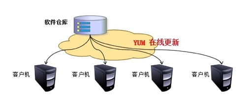

yum工具的使用
1. rpm的弊端
前面我们讲了下rpm，那么rpm有什么弊端呢？其弊端是显而易见的，当用rpm安装软件时，若遇到有依赖关系的软件，必须先安装依赖的软件才能继续安装我们要安装的软件，当依赖关系很复杂的情况下，这种安装方式就很让人头疼，所以我们需要另一种安装方式来解决这个问题，今天我们要来学习的就是这样一个工具--yum
2. yum的优劣势
yum有什么优势呢？yum最大的优势就是能够解决rpm的依赖问题，yum能够自动解决软件安装时的依赖关系。
当然了，有优势就有劣势，人无完人嘛，软件也是一样的，yum的缺陷就是如果在未完成安装的情况下强行中止安装过程，下次再安装时将无法解决依赖关系，Fedora22+、redhat7和centos7等可以通过手动安装dnf工具来解决此问题。
dnf是redhat7上用来代替yum的一个工具，其存在的意义就是处理yum的缺陷，但其用法与yum是完全一样的，甚至连选项都是一样的，你可以理解为dnf就是yum，只是换了个名字而已。所以说只要学会了yum就自然会dnf，大家不用担心学了yum又要去学dnf之类的问题
3. 什么是yum及其作用
那么什么是yum呢？yum是yellowdog update manager的简称，它能够实现rpm管理的所有操作，并能够自动解决各rpm包之间的依赖关系。yum是rpm的前端工具，是基于rpm来实现软件的管理的一个工具。
你不能用yum去管理windows的exe程序包，也不能用yum去管理ubuntu的deb程序包，只能用yum来管理redhat系列的rpm包
4. 挂载光盘
- 插入光盘
- 执行以下命令
[root@localhost ~]# mount /dev/cdrom /mnt
mount: /dev/sr0 is write-protected, mounting read-only
[root@localhost ~]# ls /mnt/
addons EULA GPL isolinux media.repo repodata RPM-GPG-KEY-redhat-release
EFI extra_files.json images LiveOS Packages RPM-GPG-KEY-redhat-beta TRANS.TBL
[root@localhost ~]#
5. yum的原理

yum的工作需要两部分来合作，一部分是yum服务器，另一部分就是client的yum工具。下面分别介绍两部分工作原理。
yum服务器端工作原理
所有要发行的rpm包都放在yum服务器上以提供别人来下载，rpm包根据kernel的版本号，cpu的版本号分别编译发布。yum服务器只要提供简单的下载就可以了，ftp或者http的形式都可以。yum服务器有一个最重要的环节就是整理出每个rpm包的基本信息，包括rpm包对应的版本号、conf文件、binary信息，以及很关键的依赖信息。在yum服务器上提供了createrepo工具，用于把rpm包的基本概要信息做成一张“清单”，这张“清单”就是描述每个rpm包的spec文件中信息。
client端工作原理
client每次调用yum install或者search的时候，都会去解析/etc/yum.repos.d下面所有以.repo结尾的配置文件，这些配置文件指定了yum服务器的地址。yum会定期去更新yum服务器上的rpm包清单，然后把清单下载保存到yum客户端自己的cache里面，根据/etc/yum.conf里配置（默认是/var/cache/yum下面），每次调用yum装包的时候都会去这个cache目录下去找清单，根据清单里的rpm包描述从而来确定安装包的名字、版本号、所需要的依赖包等，然后再去yum服务器下载rpm安装。（前提是不存在rpm包的cache）
6. yum的配置文件
- 配置文件有哪些：
- /etc/yum.conf 作用：为所有仓库提供公共配置
- /etc/yum.repos.d/*.repo 作用：为仓库的指向提供配置
- yum的repo配置文件中可用的变量：
- $releaseversion：当前OS的发行版的主版本号
- $arch：平台类型
- $basearch：基础平台
为yum定义repo文件：
[Repo_Name]：仓库名称
name：描述信息
baseurl：仓库的具体路径，接受以下三种类型
ftp://
http://
file:///
enabled：可选值｛1｜0｝，1为启用此仓库，0为禁用此仓库
gpgcheck：可选值｛1｜0｝，1为检查软件包来源合法性，0为不检查来源
如果gpgcheck设为1，则必须用gpgkey定义密钥文件的具体路径
gpgkey=/PATH/TO/KEY
vim /etc/yum.conf
cachedir=/var/cache/yum/$basearch/$releasever //缓存目录
keepcache=0 //缓存软件包, 1启动 0 关闭
debuglevel=2 //调试级别
logfile=/var/log/yum.log //日志记录位置
exactarch=1 //检查平台是否兼容
obsoletes=1 //检查包是否废弃
gpgcheck=1 //检查来源是否合法,需要有制作者的公钥信息
plugins=1 //是否启用插件
tolerant={1|0} //容错功能，1为开启，0为关闭，当设为0时，如果用yum安装多个软件包且其中某个软件包已经安装过就会报错；当设为1时，当要安装的软件已经安装时自动忽略
installonly_limit=5
bugtracker_url
# metadata_expire=90m //每小时手动检查元数据
# in /etc/yum.repos.d //包含repos.d目录
7. yum仓库管理
7.1 yum本地仓库
- 挂载光盘参照本章第4部分内容
- 复制光盘内容到yum服务器
[root@localhost ~]# mkdir /opt/myrepo
[root@localhost ~]# cp -r /mnt/* /opt/myrepo/
[root@localhost ~]# ls /opt/myrepo/
addons EULA GPL isolinux media.repo repodata RPM-GPG-KEY-redhat-release
EFI extra_files.json images LiveOS Packages RPM-GPG-KEY-redhat-beta TRANS.TBL
- 配置repo文件
[root@localhost ~]# ls /etc/yum.repos.d/
redhat.repo
[root@localhost ~]# vim /etc/yum.repos.d/myrepo.repo
[root@localhost ~]# cat /etc/yum.repos.d/myrepo.repo
[myrepo]
name=myrepo
baseurl=file:///opt/myrepo
gpgcheck=0
enabled=1
[root@localhost ~]#
- 清空yum本地缓存
[root@localhost ~]# yum clean all
Loaded plugins: langpacks, product-id, search-disabled-repos, subscription-manager
This system is not registered with an entitlement server. You can use subscription-manager to register.
Cleaning repos: myrepo
Cleaning up everything
Maybe you want: rm -rf /var/cache/yum, to also free up space taken by orphaned data from disabled or removed repos
- 检验yum本地仓库
[root@localhost ~]# yum list all
......
plymouth-core-libs.i686 0.8.9-0.28.20140113.el7 myrepo
plymouth-graphics-libs.i686 0.8.9-0.28.20140113.el7 myrepo
policycoreutils-devel.i686 2.5-17.1.el7 myrepo
policycoreutils-devel.x86_64 2.5-17.1.el7 myrepo
policycoreutils-gui.x86_64 2.5-17.1.el7 myrepo
policycoreutils-newrole.x86_64 2.5-17.1.el7 myrepo
policycoreutils-sandbox.x86_64 2.5-17.1.el7 myrepo
polkit.i686 0.112-12.el7_3 myrepo
polkit-devel.i686 0.112-12.el7_3 myrepo
polkit-devel.x86_64 0.112-12.el7_3 myrepo
polkit-docs.noarch 0.112-12.el7_3 myrepo
polkit-kde.x86_64 0.99.1-4.20130311git.el7 myrepo
polkit-qt.i686 0.103.0-10.el7_0 myrepo
polkit-qt.x86_64 0.103.0-10.el7_0 myrepo
poppler.i686 0.26.5-16.el7 myrepo
poppler-glib.i686 0.26.5-16.el7 myrepo
poppler-qt.i686 0.26.5-16.el7 myrepo
poppler-qt.x86_64 0.26.5-16.el7 myrepo
popt.i686 1.13-16.el7 myrepo
popt-devel.i686 1.13-16.el7 myrepo
......
7.2 yum网络仓库
- 官方网络yum仓库（国外）
- 阿里云yum仓库
- 163yum仓库
- xx大学yum仓库
- epel源
// Base/Extras/Updates: 默认国外官方源
[root@localhost ~]# curl -o /etc/yum.repos.d/CentOS-Base.repo \
http://mirrors.aliyun.com/repo/Centos-7.repo
//国外epel源
[root@localhost ~]# yum -y install epel-release
//阿里云epel源
[root@localhost ~]# curl -o /etc/yum.repos.d/epel.repo \
http://mirrors.aliyun.com/repo/epel-7.repo
7.3 软件官方仓库
// 源查找方式基本一致,zabbix,mysql,saltstack,openstack等等，上官网找
[root@localhost ~]# vim /etc/yum.repos.d/nginx.repo
[nginx]
name=nginx repo
baseurl=http://nginx.org/packages/centos/7/$basearch/
gpgcheck=0
enabled=1
7.4 redhat7使用centos7的yum源
//下载base和epel仓库
[root@localhost ~]# wget -O /etc/yum.repos.d/CentOS-Base.repo http://mirrors.aliyun.com/repo/Centos-7.repo
[root@localhost ~]# sed -i 's#\$releasever#7#g' /etc/yum.repos.d/CentOS-Base.repo
[root@localhost ~]# wget -O /etc/yum.repos.d/epel.repo http://mirrors.aliyun.com/repo/epel-7.repo
8. yum管理软件
8.1 yum命令语法：
yum [options] [command] [package ...]
8.2 常用的options：
--nogpgcheck //如果从网上下载包有时会检查gpgkey，此时可以使用此命令跳过gpgkey的检查
-y //自动回答为"yes"
-q //静默模式，安装时不输出信息至标准输出
--disablerepo=repoidglob //临时禁用此处指定的repo
--enablerepo=repoidglob //临时启用此处指定的repo
--noplugins //禁用所有插件
8.3 常用的command：
list //列表
all //默认项
available //列出仓库中有的，但尚未安装的所有可用的包
installed //列出已经安装的包
updates //可用的升级
clean //清理缓存
packages
headers
metadata
dbcache
all
repolist //显示repo列表及其简要信息
all
enabled //默认项
disabled
install //安装
yum install packages [...]
update //升级
yum update packages [...]
update_to //升级为指定版本
downgrade package1 [package2 ...] //降级
remove|erase //卸载
info //显示rpm -qi package的结果
yum info packages
provides|whatprovides //查看指定的文件或特性是由哪个包安装生成的
search string1 [string2 ...] //以指定的关键字搜索程序包名及summary信息
deplist package [package2 ...] //显示指定包的依赖关系
history //查看yum的历史事务信息
localinstall //安装本地rpm包，自动解决依赖关系
grouplist //列出可用的组
groupinstall "group name" //安装一组软件
createrepo命令 //创建yum仓库的元数据信息
[root@localhost ~]# yum install createrepo -y
[root@localhost ~]# createrepo [options] <directory>
8.4 具体实例
8.4.1 搜索软件包
//列出软件仓库中可用的软件
[root@localhost ~]# yum list all
//进行模糊查找
[root@localhost ~]# yum list|grep ftp
//列出软件包详情
[root@localhost ~]# yum info ftp
8.4.2 安装软件包
//安装软件只需要给出软件名称
[root@localhost ~]# yum install traceroute
//安装过程中分析依赖关系后, 直接安装, 无需交互
[root@localhost ~]# yum -y install php
//安装本地的rpm包, 如果有依赖关系, 会自动从软件仓库中下载所需依赖（非来自.repo定义的软件仓库）
[root@localhost ~]# yum localinstall /mnt/Packages/bind-9.9.4-50.el7.x86_64.rpm
//安装网络上rpm包
[root@localhost ~]# yum install http://repo.zabbix.com/zabbix/3.4/rhel/7/x86_64/zabbix-release-3.4-2.el7.noarch.rpm
8.4.3 重装软件包
//检查软件是否存在
[root@localhost ~]# rpm -q vsftpd
vsftpd-2.2.2-24.el6.x86_64
//检查vsftpd软件配置文件
[root@localhost ~]# rpm -qc vsftpd
/etc/logrotate.d/vsftpd
/etc/pam.d/vsftpd
/etc/vsftpd/ftpusers
/etc/vsftpd/user_list
/etc/vsftpd/vsftpd.conf
//不小心删除vsftpd配置文件
[root@localhost ~]# rm -f /etc/vsftpd/vsftpd.conf
//重新安装软件
[root@localhost ~]# yum reinstall vsftpd
//再次检查
[root@localhost ~]# rpm -qc vsftpd
/etc/logrotate.d/vsftpd
/etc/pam.d/vsftpd
/etc/vsftpd/ftpusers
/etc/vsftpd/user_list
/etc/vsftpd/vsftpd.conf
8.4.4 更新软件包
//对比Linux已安装的软件和yum仓库中的软件, 有哪些需要升级
[root@localhost ~]# yum check-update
//更新软件
[root@localhost ~]# yum update acl -y
8.4.5 删除软件包
//先安装一个samba软件
[root@localhost ~]# yum -y install samba
//删除该软件包,不会删除依赖, 但是我们尽可能不要使用删除软件操作
[root@localhost ~]# yum -y erase samba
[root@localhost ~]# yum -y remove samba
8.4.6 与仓库相关的命令
//列出yum源可用的软件仓库
[root@localhost ~]# yum repolist
//列出全部yum源可用和禁用的仓库
[root@localhost ~]# yum repolist all
//查看这个文件或命令属于哪个包
[root@localhost ~]# yum provides /etc/my.cnf
[root@localhost ~]# yum provides cd
[root@localhost ~]# yum provides *bin/pstree
8.4.7 与缓存相关的命令
//缓存yum源软件仓库, xml元数据文件
[root@localhost ~]# yum makecache
//缓存软件包, 修改yum全局配置文件
[root@localhost ~]# vim /etc/yum.conf
[main]
cachedir=/var/cache/yum/$basearch/$releasever
keepcache=1 //启动缓存
//查看缓存的xml文件
[root@localhost ~]# ls /var/cache/yum/x86_64/7/base/
//查看缓存软件包路径
[root@localhost ~]# ls /var/cache/yum/x86_64/7/
#另一种缓存rpm包方式
//1.安装插件支持只下载软件包不安装
[root@localhost ~]# yum -y install yum-plugin-downloadonly
//2.将软件下载至指定目录
[root@localhost ~]# yum -y install --downloadonly --downloaddir=/tmp httpd
//清除所有yum缓存
[root@localhost ~]# yum clean all
//只清除缓存的软件包
[root@localhost ~]# yum clean packages
8.4.8 与包组相关的命令
//列出已经安装和所有可使用的软件组
[root@localhost ~]# yum groups list
//安装一整个组的软件
[root@localhost ~]# yum groups install Development tools \
Compatibility libraries \
Base Debugging Tools
//yum删除包组
[root@localhost ~]# yum groups remove -y Base
8.4.9 与历史记录相关的命令
//查看历史执行yum命令
[root@localhost ~]# yum history
//查询历史执行yum命令ID详细信息
[root@localhost ~]# yum history info N
//撤销历史执行过的yum命令
[root@localhost ~]# yum history undo N
8.4.10 YUM签名检查机制
- rpm软件提供组织redhat在构建rpm包时, 使用其私钥private key对 rpm进行签名
- 客户端在使用rpm为了验证其合法性, 可以使用redhat提供的公钥public key进行签名检查
方式1：指定公钥位置
[root@localhost ~]# vim /etc/yum.repos.d/CentOS-Base.repo
[base]
name=CentOS-$releasever - Base mirrorlist=http://mirrorlist.centos.org/?release=$releasever&arch=$basearch&repo=os&infra=$infra #baseurl=http://mirror.centos.org/centos/$releasever/os/$basearch/
gpgcheck=1
gpgkey=file:///etc/pki/rpm-gpg/RPM-GPG-KEY-CentOS-7
方式2：提前导入公钥
[root@localhost ~]# rpm --import /etc/pki/rpm-gpg/RPM-GPG-KEY-CentOS-7
[root@localhost ~]# vim /etc/yum.repos.d/CentOS-Base.repo
[base]
name=CentOS-$releasever - Base
mirrorlist=http://mirrorlist.centos.org/?release=$releasever&arch=$basearch&repo=os&infra=$infra
baseurl=http://mirror.centos.org/centos/$releasever/os/$basearch/
gpgcheck=1
方式3：不进行签名验证
//不检查软件包的签名
[root@localhost ~]# yum install httpd --nogpgcheck
作业：
- 如何配置本地光盘yum仓库以及网络yum仓库
- 如何使用yum安装 httpd php nginx
- 如何配置yum缓存rpm包（至少阐述两种方式）
- 如何使用yum安装本地缓存好的rpm包
- 如何使用yum删除httpd软件包
- 如何构建企业内部yum仓库服务(请写出详细步骤,至少准备两台虚拟机，使用http方式)